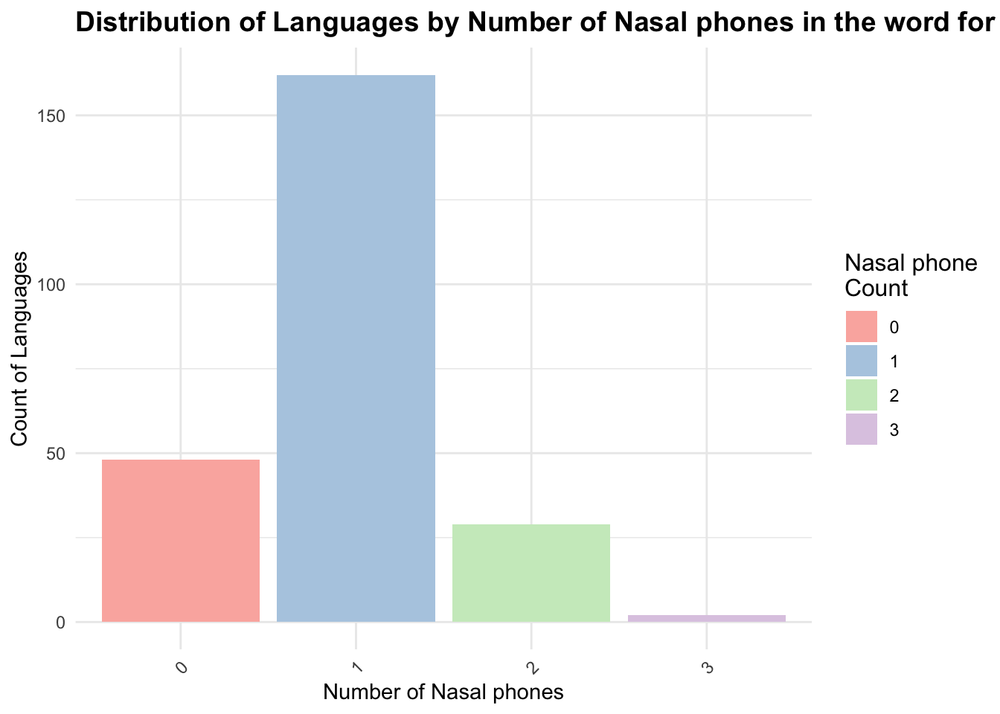

Nasal Phones Across Tongues: Exploring Sound Symbolism in the Word ‘Nose’ Across Languages
Abstract
The word for ‘Nose’ in English starts with a nasal sound - just a coincidence? This study looks at the phonosemantic relationship between nasal sounds and their representation in words for ‘nose’ across over 200 languages, employing a combination of logistic regression analysis and permutation testing. There is a sigifniciant, non-random occurence of nasal phones in these words, suggesting a universal tendency to link nasal sounds with the concept of the nose. This pattern holds true across language families, challenging the long-held belief in the arbitrariness of language and indicating a deeper, potentially innate connection between sound and meaning for basic vocabulary in human languages.
1 Introduction
The study of sound (phonetics) and meaning (semantics) are usually disconnected areas of inquiry within the wider study of language (linguistics). One of the core principles in modern linguistics is the arbitrariness of language: For the most part, there is no direct relationship between the form of a word and its meaning or vice versa. Nothing about the sounds in the word “cat” would give the listener a cue what it refers to; the meaning must be learned independently from the sound. Restricting language to a direct link between sound and meaning would get difficult, such that this arbitrariness is a crucial element of language freeing up the communication system, which is important as the number of words increases (Gasser, 2004). However, a growing body of cross-linguistic (typological) research challenges this notion, uncovering patterns of phonosemantics or sound symbolism that hint at a more iconic relationship between phonetic features and semantic content. While there are the more obvious onomatopoeia, which are words that directly imitate or represent sounds, like ‘meow’, this paper is more interested in more subtle forms of sound symbolism.
This paper examines the prevalence of nasal sounds in the words for “nose” across more than 200 languages, investigating the hypothesis that there exists a non-arbitrary relationship between the sound of these words and their meaning. This research is motivated by existing studies in the field of phonosemantics, which suggest patterns of sound symbolism across various basic lexical items related to body parts. Notably, previous work by Urban (2011) and Joo (2019) has highlighted sound-symbolic associations in terms for “lip” and “tooth,” among others. This study aims to extend these findings to the lexical representation of “nose,” another word featured on the Leipzig-Jakarta or Swadesh List. Both lists feature words which linguists agree to be part of a most basic vocabulary, making these words relatively semantically stable, meaning that they are less likely to be borrowed from other languages. This research is leveraging these typological tendencies, exploring whether the semantic stability and physical function of the nose as a body part are mirrored in its phonological representation by a higher occurrence of nasal sounds than would be expected by chance.
The estimand is therefore the proportion of languages that feature a nasal phone in their word for nose. The choice of this estimand is grounded in the hypothesis that there is a universal or widespread phonosemantic bias towards using nasal sounds in words for “nose,” reflecting an iconic link between sound and meaning. This is predicated on the assumption that the articulatory properties of nasal phones (i.e., airflow through the nose) might be symbolically linked to the semantic field of nasal functions. Intuitively, this hypothesis holds true for most languages that most readers should be familiar with, such as “nose” in English, “nez” in French, “nariz” in Spanish etc., so this research specifically focuses on testing whether this observation is an artifact of genetic relationships between Indo-European langauges, or present in other unrelated language families.
Utilizing a dataset comprising over 200 languages, the study employs statistical analysis to evaluate the presence of nasal phones in the word for “nose” and assesses the likelihood of their occurrence beyond random distribution. The methodology involves compiling lexical data from a range of languages, followed by a logistic regression analysis and permutation test to identify phonosemantic patterns. The results indicate a statistically significant trend for nasal sounds in the words for “nose”, beyond the Indo-European language family, supporting the hypothesis of a sound-meaning association, which challenges the traditional notion of arbitrariness.
The paper will begin with a closer look at the data source and measurement (Section 2), followed by an explanation of the statistical model used (Section 3) and selection of relevant results (Section 4). Finally, I will conclude with a discussion of our findings to integrate them into the broader literature on phonosemantics (Section 5). I will also discuss potential potential biases, limitations, and future directions. The analysis was conducted using the statistical programming language R (R Core Team 2024a). In the data analysis and visualization process, I also made use of the following R packages: tidyverse (Wickham et al. 2019), dplyr (Wickham et al. 2023), knitr (Xie 2014), and stats (R Core Team 2024b). The interactive map was made possible with sf (Pebesma 2018) and leaflet (Cheng et al. 2024).
2 Data
2.1 Source and Sampling
The dataset for this study was constructed to investigate the phonosemantic relationship between the sound of the word “nose” and its meaning across languages. Initially, translations for “nose” were obtained from Google Translate and Bing Translate for approximately 150 languages. Although Google Translate has faced it fair share of criticism, it has become more accurate in recent years, in particular for simple words, and when using back-and-forth translation as a validation tool (Tsai 2019). However, given the well-documented bias of Google Translate towards Indo-European languages, additional efforts were made to ensure broader linguistic diversity and expand the dataset.
To this end, Ethnologue, a comprehensive language database, was consulted to identify languages from underrepresented families (Eberhard, Simons, and Fennig 2021). Ethnologue lists 160 language families, which became the sampling frame. Then, a random systematic sampling method was used, with one in every four language families being included in the sample. If a language family had no more surviving languages, or none of the languages in the language family had any reliable online dictionary available, the next language in the language family was chosen. This led to the inclusion of a total of 40 language families. However, the number of languages sampled from each family varied significantly, as will be discussed in the next section.
For these underrepresented languages sampled through Ethnologue, translations were sourced from Glosbe (Glosbe 2024) and other specialized language dictionaries. While such dictionaries are not always accurate, they have been shown to be a solid resource for basic vocabulary words such as ‘nose’ for underrepresented languages (Aji et al. Publication Year). This approach was taken to compile a dataset of a total of 242 languages, that is more representative of global linguistic diversity, countering the Indo-European bias present in initial sources.
2.2 Variables of Interest
2.2.1 Word for “Nose” and Presence of Nasal phones
The primary variable of interest is the word for “nose” in each language, categorized by the presence or absence of nasal phones. The measurement of whether the word for “nose” in each language included nasal phones (e.g., /m/, /n/, /ŋ/, /ɱ/), a phonetic analysis was performed. This involved consulting IPA phonetic transcriptions of each word, where available (International Phonetic Association Access Year). For languages where such transcriptions were not readily accessible, but a nasal phone was suspected given the latin transcription, secondary linguistic literature was utilized, to confirm the inferences on phonetic characteristics. This binary measurement (presence vs. absence of nasal phones) is pivotal for evaluating the study’s hypothesis on phonosemantic bias.
Table 1 shows a subset of some rows and selected columns, including the latin transcription of the word for “nose”, its phonetic transcription according to the IPA, and the presence or absence of a nasal phone. Figure 1 then shows the distribution of languages based on the presence of nasal phones in the word for “nose”, providing a clear visualization of how common nasal phones are in these words across different languages. An overwhelming 80% of languages in the sample have at least one nasal phone. Figure 2 breaks down the number of nasal phones further, with the vast majority of languages having exactly one nasal phone. However, while the median is indeed 1, as shown in Table 2, the mean is 0.94. Moreover, no language in the sample had more than 3 nasal phones in their word for ‘nose’.
Moreover, I used the phonetic transcription to measure whether a word has a nasal phone in the onset of its first syllable. For example, the English word for ‘Nose’ starts with a nasal phone and would therefore be classified as having a nasal onset. Of those languages with a nasal phone in the word ‘nose’, Figure 3 shows the proportion of languages who have this phone in the onset position, with the majority of languages having the nasal phone not in the onset position, meaning that the nasal phone is found either in the syllable coda/rhyme, such as in the Arabic “/ænf/” or in the Turkish “/burun/”.
To further justify the direction of this research, Figure 4 and Figure 5 show the same parameters for languages of the Indo-European language family, which includes English, French, Spanish, and Hindi. Both figures confirm the initial assumption, that at least for Indo-European languages, an overwhelming proportion of languages have a nasal phone in the syllable onset in the word for ‘nose’.
| language | language_family | latin_transcription | ipa_transcription | nasal_phone |
|---|---|---|---|---|
| Kumyk | Turkic | Burun | /burun/ | TRUE |
| Italian | Indo-European | naso | /nazo/ | TRUE |
| Wu Chinese | Sino-Tibetan | Bitou | /bito:/ | FALSE |
| Edo | Niger-Congo | Unu | /unu/ | TRUE |
| Odia | Indo-European | Naak | /na:k/ | TRUE |
| Korean | Koreanic | Ko | /ko/ | FALSE |

| mean | median | sd |
|---|---|---|
| 0.94 | 1 | 0.59 |
2.2.2 Phones and Syllables
Phones and syllables, as the basic units of speech sound, must be taken into account in any phonosemantic analysis. For this research, I used the phonetic transcription to count the number of phones and syllabize the word for ‘nose’. For most languages, this was fairly uncomplicated due to syllable structure being encoded in phonetic transcriptions. For languages, where syllabilization was less obvious (e.g. “/nhompfu/” in Tsonga), educated guesses based on universal phonotactical constraints were made (Berent and Lennertz 2010). The primary reason behind the interest in the number of syllables and phones was to count the number of nasal phones per syllable and the proportion of nasal phones in the word overall. ?@fig-nasal-phones-overallcount and Figure 7 show the variability in nasal phones per syllable and proportion overall. Some occurences of nasal phones (e.g. /nun/ in Bambara) are more likely to be the result of an underlying sound symbolism than others (e.g. /dægunu/ in Latvian), since we need to normalize the number of nasal phones with some standard unit of measurement, like a syllable.
2.2.3 Language Family
In the context of this research, the inclusion of 40 language families, systematically sampled from Ethnologue’s comprehensive listing, ensures a broad representation of linguistic diversity. This stratified approach allows for a comparative analysis across major and minor language families, highlighting potential phonosemantic patterns that may be prevalent or unique within specific families.
Figure 8 shows which language families have been included and how many languages have been sampled per language family. Unsurprisingly, given the availability of verifiable data on Indo-European languages, they are still overerpresented and make up almost 25% of the overall sample. This overrpresentation, however, is also a reflection of real-world data: Although Indo-European languages make up only 6% of the worlds living languages, 46% of the world’s population speaks an Indo-European language (Eberhard, Simons, and Fennig 2021).
A number of language families in the sample are only represented by one language, with is either due to the language family being too small or not having other members with verifiable vocabulary data. However, the majority of language families are represented by at least 2 languages.
3 Methodology and Model
In theory, the most accurate approach to investigate whether the occurence of the nasal phoneme is the result of sound symbolism or not, would be to quantify the likelihood of a nasal phone occuring in any given word in any given language in the sample. However, for the majority of languages, there is no such readily available data, and primary investigation would be beyond the scope of this research. Yet, we can make use of some facts to guide this research as heuristics. The vast majority of language have a nasal phone in their phonetic inventory, with /m/, /n/, and /ŋ/ being among the most universally found phonemes across languages, being represented in over 94%, 78%, and 63% of languages (PHOIBLE 2024). Moreover, in languages which possess these phonemes, in particular /m/ and /n/ tend to be highly frequent within the langauge due to their ease of articulation. In fact, in the unrelated languages of German, Arabic, and Turkish, /n/ is either the second or third most frequent sound Serengil and Akin (2011). Thus, for simplicity, we will assume that the frequency of these nasal phones in a language is not a significant predictor variable, as it is assumed to be constant across all languages.
To investigate the phonosemantic relationship between the presence of nasal phones in words for “nose” across different languages, I propose a logistic regression model. This statistical approach enables us to estimate the likelihood of nasal phone presence based on various linguistic characteristics.
Moreover, a permutation test is performed to rigorously assess the robustness of our findings and to determine the likelihood of observing our results under the null hypothesis—that is, the absence of any phonosemantic relationship between the presence of nasal phonemes in words for “nose” and the linguistic characteristics we’re examining. This non-parametric approach involves randomly shuffling the linguistic characteristic labels (such as whether a language is Indo-European or not) across our dataset multiple times, each time recalculating the statistic of interest (e.g., the difference in proportions of languages with nasal phonemes between shuffled groups). By doing so, we generate a distribution of the statistic under the assumption that there is no inherent association between the linguistic characteristics and the presence of nasal phonemes.
This statistical approach is particularly valuable in the study of phonosemantics for several reasons. First, it does not rely on the assumption of normal distribution of the data, making it well-suited to the analysis of linguistic data, which often does not meet the parametric assumptions. Second, by directly simulating the distribution of outcomes under the null hypothesis, the permutation test provides a straightforward, data-driven way to assess the significance of our findings without overly complex statistical models that require data on underlying phone frequency distributions. Finally, this method complements the logistic regression analysis by providing an additional layer of validation for our conclusions regarding the presence of sound symbolism in the word for “nose”.
3.0.1 Model Formulation
The first logistic regression model is \[ \log\left(\frac{p_i}{1-p_i}\right) = \beta_0 + \beta_1 \text{LanguageFamily}_i + \beta_2 \text{NumberOfPhones}_i + \beta_3 \text{NumberOfSyllables}_i \]
where:
- \(p_i\) is the probability of the presence of at least one nasal phone in the word for “nose” in the \(i^{th}\) language.
- \(\text{LanguageFamily}_{i}\) is a categorical variable for each language family included in the sample. The reference category is the Indo-European langauge family, by which the coefficients for the other levels of Language_Family will then represent the difference in the log odds of the outcome relative to Indo-European languages.
- \(\text{NumberOfPhones}_{i}\) is an integer variable on the number of phones in the word for ‘nose’
- \(\text{NumberOfSyllables}_{i}\) is an integer variable on the number of syllables in the word for ‘nose’
- The \(\beta\) coefficients quantify the influence of each predictor.
A slight adaptation of the model gives us this second, simpler model
\[ \log\left(\frac{p_i}{1-p_i}\right) = \beta_0 + \beta_1 \text{IsIndoEuropean}_i + \beta_2 \text{NumberOfPhones}_i + \beta_3 \text{NumberOfSyllables}_i \]
where: * \(\text{IsIndoEuropean}_{i}\) is a binary variable indicating whether the language belongs to the Indo-European language family or not
3.0.2 Models Justification
The choice of a logistic regression model is justified by the binary nature of our primary outcome of interest: the presence or absence of nasal phones in words for “nose.” Logistic regression allows us to account for multiple predictors and their interaction effects, offering a nuanced understanding of how linguistic characteristics influence the phonosemantic relationship.
Firstly, the Indo-European language family, with its wide geographical distribution and historical significance, has been subject to extensive linguistic research. By isolating the effect of being an Indo-European language, we can scrutinize whether the phonosemantic trends observed are unique to this family or if they extend across language families, suggesting a more universal phonosemantic principle at play. By incorporating this binary variable into our model, we aim to meticulously assess the impact of linguistic lineage on the use of nasal phones, thereby isolating the effects of genetic relationships from our analysis.
Languages within the same family may share structural similarities and historical borrowings that could influence their phonological systems, including the use of nasal sounds. By explicitly incorporating this factor into our model, we aim to isolate the effect of language family from other linguistic and phonological variables, thereby ensuring that any observed patterns in nasal phone presence are not merely artifacts of linguistic lineage but rather reflect deeper phonosemantic relationships. By further incorporating the categorical variable for all language families, we can also assess an additional impact on the outcome based on the language family.
Moreover, including the number of phones and syllables as a predictor variable is crucial in order to account for the fact that longer words should be on average more likely to include a nasal phone than shorter words, holding all other things equal.
4 Results
4.1 Impact of Language Family
The logistic regression model identified the Indo-European language family as the baseline for comparison. This allowed for a direct assessment of how belonging to different language families influences the probability of a language featuring nasal phonemes in the word for “nose.” Model 1 (see Section 6) mostly showed diversity in the impact of the language family on featuring a nasal phone, with some language families showing a higher probability, and others a lower probability compared to the Indo-European baseline. However, except for Sino-Tibetan (e.g. Mandarin Chinese) and Northeast Caucasian (e.g. Chechen) languages, which are significantly less likely to feature nasal phones, none of the language families impact the overall log-odds ratio significantly.
It should be noted that we are not interested in the effect of any single language family, since in this methodology, many language families would have data unduly influenced by only one or two representatives - not a sufficient sample size. We are more interested in making cross-linguistic claims and investigate whether there is an overall effect of language family, as in whether the Indo-European languages are outliers or follow an overall trend. Therefore, model 2 is more appropriate for this purpose, as it uses a binary variable “is_indo_european” as one of its predictor variables. Table 3 shows that the odds of having at least one nasal phoneme in the word for “nose” are approximately 2.67 times higher for languages in the Indo-European language family compared to languages not in this family, holding other variables constant. However, since this effect does not appear to be statistically significant, we cannot make any definitive claims on whether there is no cross-linguistic trend to nasal phones in the word for “nose”.
| term | estimate | std.error | statistic | p.value | odds_ratio |
|---|---|---|---|---|---|
| (Intercept) | -0.382 | 0.647 | -0.590 | 0.555 | 0.683 |
| is_indo_europeanTRUE | 0.980 | 0.581 | 1.686 | 0.092. | 2.665 |
| Number_Of_Phones | 0.923 | 0.211 | 4.364 | 0.000*** | 2.517 |
| Number_Of_Syllables | -1.326 | 0.438 | -3.030 | 0.002** | 0.265 |
4.2 Impact of Phonetic Complexity
The models further explored the role of phonetic complexity, as measured by the number of phones and syllables in words for “nose”. As shown in Table 3, for each additional phone in the word for ‘nose’, there was a statistically significant increase in the likelihood of nasal phoneme presence (Coefficient estimate = 0.92, OR = 2.51, p < 0.001). This suggests that longer words are more likely to include nasal sounds, as expected. In contrast, an an increase in the number of syllables was associated with a decreased likelihood of nasal phoneme presence (Coefficient = -1.32, OR = 0.26, p < 0.01), indicating that shorter words are more conducive to nasal sounds.
4.3 Permutation Test
The permutation test conducted to assess the robustness of our findings yielded a p-value of 0.0243. This result suggests that the patterns we observed—specifically, the presence of nasal phonemes in words for “nose” being related to certain linguistic characteristics—are unlikely to be due to chance. A p-value below the commonly accepted threshold of 0.05 indicates statistical significance, providing support for the hypothesis that there is a meaningful phonosemantic relationship at play.
In essence, this finding strengthens our confidence in the initial logistic regression analysis, suggesting that the observed associations between the linguistic features of languages and the phonetic representation of the word for “nose” may indeed reflect sound symbolism, rather than arbitrary variation or an inherent feature of languages of the Indo-European language family. This supports the idea that the sounds used in words for “nose” across various languages are not randomly selected.
5 Discussion
This study explored the correlation between nasal phonemes in words for “nose” across a diverse linguistic dataset. By employing a logistic regression model and subsequent permutation testing, I investigated the hypothesis that a non-arbitrary relationship exists between the sound of these words and their meaning, extending beyond mere phonological coincidence to hint at a deeper, possibly universal, phonosemantic bias.
The findings show significant phonosemantic patterns, revealing that the occurrence of nasal phonemes in words for “nose” is not uniformly random across languages. Specifically, the study highlighted a statistically significant propensity for languages, regardless of their Indo-European lineage, to feature nasal sounds in the lexical representation of “nose.” This supports the broader hypothesis of sound symbolism in language, suggesting that certain phonetic features may inherently carry semantic weight in the natural development of human languages Wichmann, Holman, and Brown (2010).
The findings related to the impact of phonetic complexity - namely, the number of phones and syllables in words for “nose” - offer insights into the dynamics of language structure and meaning. The positive correlation between word length and the likelihood of featuring a nasal phone supports the notion that phonetic complexity may play a role in phonosemantic associations. This relationship invites further reflection on how linguistic constraints and opportunities influence the evolution of word forms in relation to their semantic content. Across langauge families, the longer the word for ‘nose’, the more likely to feature a nasal phone, supporting at least some element of randomness in the selection of phones, as expected. Moreover, the fact that shorter words for “nose” are more likely to contain nasal sounds could reflect a cognitive or communicative efficiency in language development, where the phonetic form of words closely related to nasal functions mirrors their semantic significance.
A nuanced understanding of how linguistic genetic relationships and structural characteristics influence phonosemantic associations emerged from the analysis. The Indo-European language family served as a crucial focal point, with a vast majority of its members featuring not only a nasal phone, but having a nasal phone in the syllable onset. This specificity prompts a deeper investigation into the historical and phonological development of Indo-European languages, exploring whether this feature reflects a deeper, perhaps ancient, phonosemantic bias within this family. The contrast with other language families, where nasal phonemes do not necessarily occur at the onset, underscores the complexity of sound symbolism and its variability across linguistic traditions. This observation could lead to a nuanced discussion on the interplay between phonological innovation and semantic stability in the evolution of language.
5.1 Limitations
Despite a thoughtful methodological approach, this study has some major limitations. The reliance on secondary sources for phonetic transcriptions and the inherent bias towards Indo-European languages, despite efforts to broaden linguistic diversity, may influence the generalizability of our findings. Additionally, the assumption that the frequency of nasal phonemes is consistent across languages simplifies a potentially complex aspect of phonological systems that could merit further investigation. With the current data, it is difficult to impossible to estimate the null hypothesis parameter of nasal phones occuring by chance. This would require a rich corpus of frequency analyses for a variety of languages from different language families, such that we could approximate how likely it is that a word features a nasal phone by chance. However, without such data, the underlying research question remains difficult to answer and allows only for workarounds, as presented in this paper.
5.2 Future Directions
Expanding the dataset to include more languages from underrepresented families and employing primary phonetic analysis where possible would enhance the comprehensiveness and accuracy of future studies. Moreover, exploring other lexical fields with potential phonosemantic patterns could offer new insights into the universality and limitations of sound symbolism in language. Finally, interdisciplinary collaborations, incorporating cognitive science and neurology, may reveal the psychological and physiological underpinnings of why certain sounds come to symbolize specific concepts universally.
6 Appendix
Call:
glm(formula = nasal_phone ~ LanguageFamily + Number_Of_Phones +
Number_Of_Syllables, family = binomial(link = "logit"), data = nose_typology_data)
Coefficients:
Estimate Std. Error z value Pr(>|z|)
(Intercept) 1.009e+00 9.212e-01 1.095 0.27349
LanguageFamilyAfro-Asiatic -1.155e+00 1.002e+00 -1.152 0.24921
LanguageFamilyAinu -1.825e+01 6.523e+03 -0.003 0.99777
LanguageFamilyAlgic 1.614e+01 6.523e+03 0.002 0.99803
LanguageFamilyAustro-Asiatic 1.540e+01 3.649e+03 0.004 0.99663
LanguageFamilyAustronesian 6.015e-03 8.760e-01 0.007 0.99452
LanguageFamilyAymaran 1.751e+01 6.523e+03 0.003 0.99786
LanguageFamilyCariban 1.834e+01 4.474e+03 0.004 0.99673
LanguageFamilyChicham 1.751e+01 6.523e+03 0.003 0.99786
LanguageFamilyDené–Yeniseian 1.624e+01 3.450e+03 0.005 0.99624
LanguageFamilyDravidian 1.626e+01 2.717e+03 0.006 0.99523
LanguageFamilyEskimo-Aleut 1.614e+01 4.612e+03 0.004 0.99721
LanguageFamilyHmong-Mien 1.151e+01 4.476e+03 0.003 0.99795
LanguageFamilyHokan 1.886e+01 6.523e+03 0.003 0.99769
LanguageFamilyIroquoian 1.528e+01 4.187e+03 0.004 0.99709
LanguageFamilyIsolate -1.114e+00 1.391e+00 -0.801 0.42300
LanguageFamilyJaponic 1.751e+01 6.523e+03 0.003 0.99786
LanguageFamilyKartvelian -3.129e+00 1.716e+00 -1.823 0.06835 .
LanguageFamilyKhoe -2.099e+01 6.523e+03 -0.003 0.99743
LanguageFamilyKoreanic -1.960e+01 6.523e+03 -0.003 0.99760
LanguageFamilyKra-Dai 1.534e+01 2.964e+03 0.005 0.99587
LanguageFamilyMaya -1.192e+00 1.398e+00 -0.853 0.39355
LanguageFamilyMongolic 1.614e+01 6.523e+03 0.002 0.99803
LanguageFamilyNiger-Congo 3.500e-01 8.387e-01 0.417 0.67646
LanguageFamilyNilo-Saharan -5.132e-01 1.326e+00 -0.387 0.69870
LanguageFamilyNortheast Caucasian -2.155e+00 9.711e-01 -2.219 0.02651 *
LanguageFamilyNorthwest Caucasian -3.348e+00 1.866e+00 -1.794 0.07281 .
LanguageFamilyOto-Manguean 1.613e+01 4.612e+03 0.003 0.99721
LanguageFamilyQuechua 1.676e+01 3.649e+03 0.005 0.99634
LanguageFamilySepik 1.613e+01 4.612e+03 0.003 0.99721
LanguageFamilySino-Tibetan -2.192e+00 8.338e-01 -2.629 0.00857 **
LanguageFamilyTorricelli -2.101e+01 6.523e+03 -0.003 0.99743
LanguageFamilyTrans-New Guinea 8.823e-01 1.422e+00 0.620 0.53508
LanguageFamilyTungusic 4.514e-01 1.421e+00 0.318 0.75073
LanguageFamilyTupian 1.754e+01 6.523e+03 0.003 0.99785
LanguageFamilyTurkic 3.469e-01 1.180e+00 0.294 0.76871
LanguageFamilyTuu 1.477e+01 6.523e+03 0.002 0.99819
LanguageFamilyUralic -9.259e-01 7.980e-01 -1.160 0.24596
LanguageFamilyUto-Aztecan -2.183e+01 3.510e+03 -0.006 0.99504
Number_Of_Phones 1.369e+00 3.159e-01 4.335 1.46e-05 ***
Number_Of_Syllables -2.717e+00 6.919e-01 -3.927 8.60e-05 ***
---
Signif. codes: 0 '***' 0.001 '**' 0.01 '*' 0.05 '.' 0.1 ' ' 1
(Dispersion parameter for binomial family taken to be 1)
Null deviance: 240.64 on 240 degrees of freedom
Residual deviance: 149.41 on 200 degrees of freedom
AIC: 231.41
Number of Fisher Scoring iterations: 177 References
Aji, Alham Fikri, Genta Indra Winata, Fajri Koto, Samuel Cahyawijaya, Ade Romadhony, Rahmad Mahendra, Kemal Kurniawan, et al. Publication Year. “One Country, 700+ Languages: NLP Challenges for Underrepresented Languages and Dialects in Indonesia.” Journal or Conference Name Volume Number (Issue Number): Page Range.
Berent, Iris, and Tracy Lennertz. 2010. “Universal Constraints on the Sound Structure of Language: Phonological or Acoustic?” Journal of Experimental Psychology: Human Perception and Performance 36 (1): 212–23. https://doi.org/10.1037/a0017638.
Beutelspacher, Albrecht. 2000. Kryptologie. 3rd ed. Vieweg+Teubner Verlag. https://www.amazon.com/Kryptologie-Albrecht-Beutelspacher/dp/3528489901.
Cheng, Joe, Barret Schloerke, Bhaskar Karambelkar, and Yihui Xie. 2024. Leaflet: Create Interactive Web Maps with the JavaScript ’Leaflet’ Library. https://CRAN.R-project.org/package=leaflet.
Eberhard, David M., Gary F. Simons, and Charles D. Fennig. 2021. “Ethnologue: Languages of the World.” Dallas, Texas: Online version; SIL International.
Glosbe. 2024. “Glosbe - the Multilingual Online Dictionary.” https://glosbe.com.
Intellaren. 2010. “A Study of Arabic Letter Frequency Analysis.” https://www.intellaren.com/articles/en/a-study-of-arabic-letter-frequency-analysis.
International Phonetic Association. Access Year. “The International Phonetic Alphabet Chart.” https://www.internationalphoneticassociation.org/IPAcharts/IPA_chart_orig/IPA_Chart_2020.pdf.
Joo, Ian. 2019. “Phonosemantic Biases Found in Leipzig-Jakarta Lists of 66 Languages.” Linguistic Typology 24 (1). https://doi.org/10.1515/lingty-2019-0030.
Pebesma, Edzer. 2018. “Simple Features for R: Standardized Support for Spatial Vector Data.” The R Journal 10 (1): 439–46. https://doi.org/10.32614/RJ-2018-009.
PHOIBLE. 2024. “Parameters — PHOIBLE Online.” https://phoible.org/parameters.
R Core Team. 2024a. R: A Language and Environment for Statistical Computing. Vienna, Austria: R Foundation for Statistical Computing. https://www.R-project.org/.
———. 2024b. R: A Language and Environment for Statistical Computing. Vienna, Austria: R Foundation for Statistical Computing. https://www.R-project.org/.
Serengil, Sefik Ilkin, and Murat Akin. 2011. “Attacking Turkish Texts Encrypted by Homophonic Cipher.” In Proceedings of the [Specify Conference Name Here]. Cambridge: Galatasaray University, Institute of Science.
Tsai, Shu-Chiao. 2019. “Using Google Translate in EFL Drafts: A Preliminary Investigation.” Computer Assisted Language Learning 32 (5-6): 510–26. https://doi.org/10.1080/09588221.2018.1527361.
Urban, Matthias. 2011. “Conventional Sound Symbolism in Terms for Organs of Speech: A Cross-Linguistic Study.” Folia Linguistica 45 (1). https://doi.org/10.1515/flin.2011.007.
Wichmann, Søren, Eric W. Holman, and Cecil H. Brown. 2010. “Sound Symbolism in Basic Vocabulary.” Entropy 12: 844–58. https://doi.org/10.3390/e12040844.
Wickham, Hadley, Mara Averick, Jennifer Bryan, Winston Chang, Lucy D’Agostino McGowan, Romain François, Garrett Grolemund, et al. 2019. “Welcome to the tidyverse.” Journal of Open Source Software 4 (43): 1686. https://doi.org/10.21105/joss.01686.
Wickham, Hadley, Romain François, Lionel Henry, Kirill Müller, and Davis Vaughan. 2023. Dplyr: A Grammar of Data Manipulation. https://CRAN.R-project.org/package=dplyr.
Xie, Yihui. 2014. “Knitr: A Comprehensive Tool for Reproducible Research in R.” In Implementing Reproducible Computational Research, edited by Victoria Stodden, Friedrich Leisch, and Roger D. Peng. Chapman; Hall/CRC. http://www.crcpress.com/product/isbn/9781466561595.